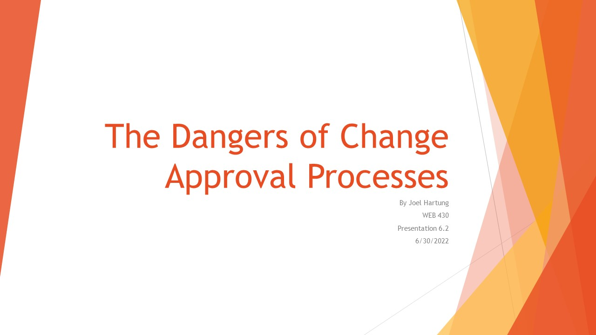

Presentation 1.2 - The Technology Value Stream
Presentation 2.2 - The Two-Pizza Team Rule
Presentation 3.2 - DevOps Automated Testing
Presentation 4.2 - Continuous Integration
Presentation 5.2 - Pager Rotation Duties

Presentation 6.2 - Dangers of the Change Approval Process